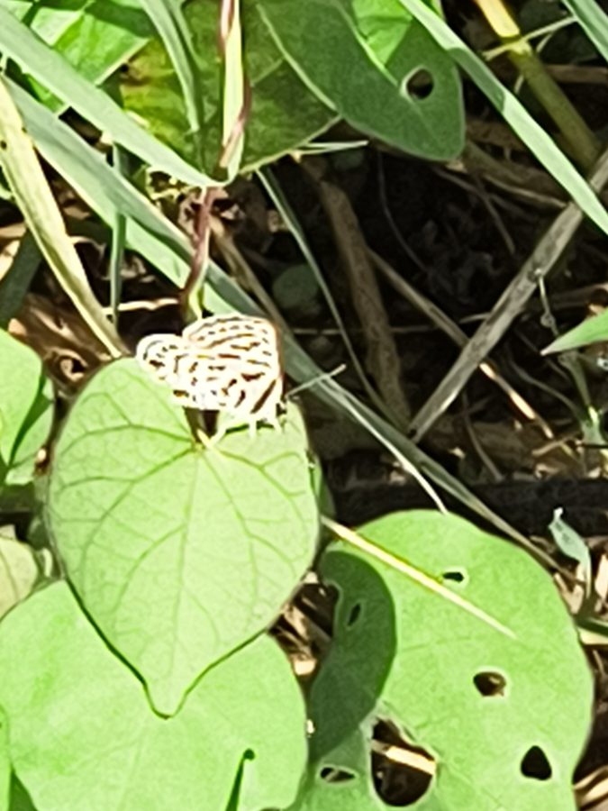

स्ट्राइप्ड पियरो तितलीStriped Pierrot
Tarucus nara · Lycaenidae · INS-0193

- Scientific name वैज्ञानिक नाम
- Tarucus nara (Kollar, 1848)
- Family कुल
- Lycaenidae
- Hindi हिंदी
- स्ट्राइप्ड पियरो तितली
- Local names स्थानीय नाम
- striped pierrot, nara pierrot, striped pierrot titli, dharidar pierrot
- Status here यहाँ की स्थिति
- native
- Movement आवागमन
- Resident, here all year
- Known from कहाँ दर्ज
- Others have published records from the wider Awadh–Purvanchal plain, none yet from Basti–Ayodhya अवध–पूर्वांचल से दूसरों के प्रकाशित अभिलेख, बस्ती–अयोध्या से अभी नहीं
- IUCN IUCN
- not evaluated
- Review समीक्षा
- not yet reviewed
When to look कब देखें
Present all year. साल भर मौजूद।
Uses and possibilities उपयोग और संभावनाएँ
Drawn from the documented uses in the profile below, where each is labelled traditional, current or a research lead. All uses →
Tell it apart from इनसे अलग पहचानें
स्ट्राइप्ड पियरो तितली / Striped Pierrot
Tarucus nara (Kollar, 1848) — Lycaenidae
स्ट्राइप्ड पियरो तितली — बेर के पेड़ों और खेतों की कटीली मेड़ों के आसपास पाई जाने वाली एक छोटी और सुंदर नीली तितली है। इसके पंखों का निचला हिस्सा मटमैला सफेद होता है जिस पर काले धब्बे आपस में मिलकर लंबी धारियों जैसे दिखाई देते हैं। नर तितली ऊपर से हल्की बैंगनी-नीली होती है। यह धूप में कटीली झाड़ियों पर बैठती है और इसकी इल्लियों की चींटियाँ देखभाल करती हैं।
Quick Identification त्वरित पहचान
| Feature | Description |
|---|---|
| Size | Small butterfly; wingspan 23–28 mm (Kehimkar 2008) |
| Male Upperside | Pale silky violet-blue with thin brown terminal line (Evans 1932) |
| Female Upperside | Greyish-brown with extensive white discal patches on both wings (Bingham 1907) |
| Underside Ground | Pale brownish-white to warm creamy ivory (Bingham 1907) |
| Basal Underside | Markings coalesced into distinct longitudinal and oblique black stripes (Wynter-Blyth 1957) |
| Marginal Spots | Velvet-black marginal spots capped with metallic turquoise scales on hindwing (Kehimkar 2008) |
| Tail | Slender black filamentous tail tipped with white at vein 2 (Bingham 1907) |
Field tip: Look around wild Ziziphus bushes on hot, sun-baked field borders. A small blue butterfly with creamy white underwings, where the dark basal markings merge into irregular longitudinal stripes rather than isolated dots, is the Striped Pierrot.
हिंदी: बेर की झाड़ियों पर मंडराने वाली इस तितली के पंखों के निचले हिस्से पर काले धब्बे आपस में मिलकर धारियाँ बना लेते हैं। पिछले पंख पर छोटी पूँछ होती है।
Morphology आकारिकी
Biometrics recorded from adult specimens (Kehimkar 2008; Evans 1932):
| Measurement | Range | Source |
|---|---|---|
| Wingspan | 23–28 mm | Kehimkar (2008) |
Adult description: The Striped Pierrot exhibits distinct sexual dimorphism and subtle seasonal polyphenism across its extensive range in northern India (Bingham 1907). In males, the upperside is pale silky violet-blue, slightly more translucent than in Tarucus balkanica, allowing the darker underside bands to be discerned faintly from above (Evans 1932). The outer margins of both wings are defined by a slender dark brown terminal line, fringed with white cilia checkered with brown (Bingham 1907). In females, the upperside is dark grey-brown with extensive diffused white discal markings and a dusting of metallic blue scales at the wing bases (Wynter-Blyth 1957).
On the underside, the ground colour is pale brownish-white or creamy ivory (Kehimkar 2008). The diagnostic characteristic distinguishing Tarucus nara from Tarucus balkanica is that the black markings across the basal and subbasal areas of both forewing and hindwing are confluent, forming distinct continuous or semi-continuous longitudinal and oblique stripes and bars (Bingham 1907). On the forewing, a long black streak extends from the base along the costa and cell, followed by an oblique discal band (Bingham 1907).
The hindwing underside features parallel basal and subbasal black streaks, an irregular postdiscal line of coalesced spots, and a marginal series of rounded black spots heavily crowned with gleaming metallic turquoise scales (Kehimkar 2008). A fine thread-like tail tipped with white arises from vein 2. Antennae are black with delicate white annulations (Bingham 1907).
Larval Stage इल्ली अवस्था
The full-grown caterpillar is onisciform, flattened, pale yellowish-green, and clothed with minute erect setae (Kehimkar 2008). A dark green mid-dorsal vessel is flanked by yellowish subdorsal streaks. The larva possesses dorsal nectar glands and pairs of eversible tentacular organs on the seventh and eighth abdominal segments to solicit ant attendance (Kehimkar 2008). The pupa is pale green or light greyish-brown with darker specks, attached by silk to twigs or bark.
हिंदी: इसका शरीर छोटा और पंखों का फैलाव 23 से 28 मिमी होता है। नर ऊपर से चमकीला बैंगनी-नीला और नीचे से मटमैला सफेद होता है जिस पर काले पट्टे खिंचे होते हैं।
Behaviour & Ecology व्यवहार और पारिस्थितिकी
The Striped Pierrot is an arid-adapted lycaenid butterfly intimately tied to open thorny scrub, degraded pastures, and riverine wastelands supporting Ziziphus species (Kehimkar 2008). Adults are exceptionally heliophilic, flying actively during the warmest, sunniest hours of the day when many other insects seek shelter (Wynter-Blyth 1957). Flight is rapid, low, and jerky, confined almost exclusively to the outer canopy and thorny sprigs of its host bushes (Bingham 1907).
Males maintain strict territorial perches on terminal twigs of ber bushes, darting out to confront rivals in spiralling dogfights before returning to their original station (Kehimkar 2008). When perched with wings closed, the butterfly displays rhythmic up-and-down hindwing movements that twitch the filamentous tails and glittering false eye-spots, drawing the attention of predators away from the vulnerable head (Wynter-Blyth 1957). Adults visit the small pungent blossoms of Ziziphus and low weeds, and males frequently congregate to mud-puddle on wet soil near village ponds and leaking wells (Kehimkar 2008).
हिंदी: यह तितली दोपहर की तेज धूप में भी खूब सक्रिय रहती है। बेर के पेड़ों के चारों तरफ यह चक्कर लगाती है और बैठते समय अपने पिछले पंखों को हिलाकर दुश्मनों को चकमा देती है।
Life Cycle / Phenology जीवन चक्र
Seasonal phenology in northern Indian plains across the agricultural calendar (Kehimkar 2008; Evans 1932):
| Season / Month | Stage | Field Observation |
|---|---|---|
| July–August (Kharif monsoon) | Egg & Larva | Oviposition on fresh vegetative growth of wild jujube |
| September–November (Post-monsoon) | Adult peak | Highest abundance around flowering ber trees (Kehimkar 2008) |
| December–January (Rabi winter) | Larva & Pupa | Overwintering as sluggish larvae or dormant pupae |
| February–April (Spring / Zaid) | Adult peak | Strong spring emergence matching the dry hot season (Wynter-Blyth 1957) |
| May–June (Pre-monsoon summer) | Adult & Egg | Highly heat-resistant; active in dry ravine scrublands |
The female deposits tiny, disc-shaped pale green eggs singly on the tender leaves, young thorns, or flower stalks of Ziziphus bushes. The egg hatches in a few days. The young larva rasps the leaf surface, feeding on tender foliage while being continuously guarded by ants (Kehimkar 2008). Larval growth is completed in a few weeks, followed by pupation on a twig or in leaf litter that lasts about a week to ten days before adult emergence. Several generations succeed each other throughout the year.
हिंदी: मादा बेर की कोमल पत्तियों पर अंडे देती है। कुछ दिनों में इल्ली निकलती है। चींटियाँ इसकी रक्षा करती हैं और कुछ हफ्तों में नई तितली बाहर आ जाती है।
Host Plants or Prey आहार
Documented larval host plants from published Indian lepidopteran accounts (Kehimkar 2008; Bingham 1907):
- Ziziphus mauritiana (Indian Jujube, family Rhamnaceae) — cultivated and wild jujube, the primary host plant across the Gangetic plain (Kehimkar 2008).
- Ziziphus nummularia (Jharber, family Rhamnaceae) — wild dwarf jujube prevalent in dry wastelands and pastures (Kehimkar 2008).
- Ziziphus xylopyrus (Kathber, family Rhamnaceae) — wild deciduous tree of dry scrub forests.
Adults feed on the nectar of Ziziphus flowers, Tridax procumbens (Tridax Daisy), and small roadside composite blossoms, and imbibe mineralized moisture from wet mud (Kehimkar 2008).
हिंदी: इसके कैटरपिलर केवल बेर और झरबेरी की पत्तियां खाते हैं। वयस्क तितलियाँ बेर के फूलों और जंगली खरपतवार के फूलों का रस चूसती हैं।
Predators / Natural Enemies शत्रु
Common insectivorous predators of the Gangetic plain likely to take lycaenids in scrub habitats:
- Spiders: Thomisid crab spiders and salticid jumping spiders lie in wait on flowering ber branches to seize visiting adults.
- Insects: Praying mantises and robber flies (Asilidae) prey on adults during their erratic flights between bushes.
- Birds: Insectivorous birds of agricultural scrub, such as green bee-eaters, tailorbirds, and prinias, catch adults.
- Parasitoids: Braconid wasps and chalcids parasitize caterpillars that lack attentive ant guards.
हिंदी: गिरगिट, शिकारी मक्खियाँ और छोटी चिड़ियाँ (जैसे दर्जी चिड़िया और बगुले) इसे खाती हैं। बिना चींटियों वाली इल्लियों पर परजीवी कीड़े हमला करते हैं।
Agricultural / Human Relevance कृषि प्रासंगिकता
Agricultural status: The Striped Pierrot is closely associated with Ziziphus mauritiana (Indian Jujube), an economically valuable fruit crop across rural Uttar Pradesh (Kehimkar 2008). The feeding of the caterpillars is confined to vegetative foliage and early flower clusters, and is rarely intense enough to cause economic damage or reduce fruit harvest in commercial orchards.
Ecological role: The adults serve as diurnal pollinators of wild jujube shrubs and cultivated ber flowers, supporting fruit set while contributing to the food web of dryland agro-ecosystems (Kehimkar 2008).
Traditional: No traditional medicinal or direct economic uses are documented in regional records.
Today: Valued as a resilient native butterfly that maintains healthy pollinator interactions in dryland farming landscapes.
Research direction (a lead, not a result): Examining the specificity of ant-larva communication signals across different Tarucus species inhabiting shared Ziziphus bushes.
हिंदी: यह तितली बेर के बागों के लिए हानिरहित है। यह बेर के फूलों का परागण करने में मदद करती है, जिससे फलों का विकास बेहतर होता है।
Expected Locally स्थानीय रूप से अपेक्षित
Not a field record. Written from published accounts for eastern Uttar Pradesh. No confirmed local sighting yet — if you have seen it, that is what the atlas needs.
अभी तक स्थानीय पुष्टि नहीं। यह विवरण प्रकाशित स्रोतों से है, किसी अवलोकन से नहीं।
The Striped Pierrot is expected throughout eastern Uttar Pradesh in rural ber orchards, grazing pastures with wild jujube thickets, and along sunlit, sandy riverine tracts. Look around flowering Ziziphus bushes on warm, sunny mornings and afternoons from March through October. GBIF holds published records from the wider Awadh–Purvanchal plain, none yet from Basti–Ayodhya. A photograph with date and location, submitted through the About page, would confirm the first local documentation for the district.
Distribution वितरण
Global range: Spanning the southern Palaearctic and Oriental realms, from the Middle East, Iran, and Afghanistan across Pakistan, India, Nepal, and Sri Lanka to Myanmar (Bingham 1907).
In India: Distributed throughout the arid and semi-arid tracts of northwestern India, Rajasthan, Gujarat, central India, the Gangetic plain, and peninsular India (Evans 1932; Kehimkar 2008).
In Uttar Pradesh: Recorded from scrublands, ravine tracts, and agricultural landscapes throughout central and eastern districts.
In Basti district / eastern UP: Expected as a resident breeding species in open wastelands, pasture verges, and village lands where jujube bushes grow.
हिंदी: यह तितली मध्य-पूर्व से लेकर पूरे भारत और श्रीलंका में पाई जाती है। उत्तर प्रदेश के ग्रामीण इलाकों में बेर की झाड़ियों पर यह आम है।
Research Questions शोध प्रश्न
- How do the relative population densities of Tarucus nara and Tarucus balkanica fluctuate on shared Ziziphus host plants in eastern UP? / पूर्वी उत्तर प्रदेश में एक ही बेर के पौधे पर इन दोनों पियरो तितलियों की संख्या में क्या अंतर रहता है?
- What are the primary ant species attending Striped Pierrot caterpillars during the peak pre-monsoon heat?
- How severely do winter orchard pesticide sprays impact the diapausing pupae of this species? / सर्दियों में बेर के पेड़ों पर कीटनाशक दवा छिड़कने से प्यूपा पर क्या असर पड़ता है?
- What proportion of hindwing tail strikes successfully deflect predator attacks away from the head?
- How does the flight period of the spring brood align with the onset of high summer temperatures in rural Awadh?
Similar Species मिलती-जुलती प्रजातियाँ
| Species | How to tell apart | हिंदी | |
|---|---|---|---|
| Tarucus balkanica ([[black_spotted_pierrot\ | Black-spotted Pierrot]]) | Underside markings in basal and discal areas are separated into distinct round dots rather than fused into continuous stripes | ब्लैक-स्पॉटेड पियरो — अलग-अलग गोल धब्बे |
| Castalius rosimon ([[common_pierrot\ | Common Pierrot]]) | Distinctly larger; underside marked with bold broad black bars and blotches rather than fine individual spots or stripes | कॉमन पियरो — चौड़े काले पट्टे |
| Leptotes plinius ([[zebra_blue\ | Zebra Blue]]) | Underside covered with wavy grey-brown zebra-like bands rather than black stripes and dots on a white ground | ज़ेब्रा ब्लू — लहरदार पट्टियाँ |
Field rule: A small lycaenid butterfly flitting around ber trees whose creamy underside features confluent black basal stripes rather than isolated dots is the Striped Pierrot.
हिंदी: ब्लैक-स्पॉटेड पियरो के नीचे अलग-अलग गोल काले धब्बे होते हैं, जबकि स्ट्राइप्ड पियरो के नीचे वे धब्बे आपस में मिलकर लंबी धारियाँ बना लेते हैं।
Taxonomy & Classification वर्गीकरण
Original description. Described by Vincenz Kollar in [1848] as Lycaena nara in Hügel, Kaschmir und das Reich der Siek, Volume 4, Part 2, page 421. Type locality: "Massuri" (Mussoorie, Uttarakhand, India).
Subspecies. Monotypic — treated as monotypic across its range in northern India and the alluvial plains (Bingham 1907; Varshney & Smetacek 2015).
Family and order placement. Order Lepidoptera, family Lycaenidae, subfamily Polyommatinae, tribe Polyommatini. The genus Tarucus Moore, 1881, comprises the pierrots.
Phylogenetic notes. Tarucus nara is closely allied to Tarucus balkanica and Tarucus theophrastus, forming a morphologically tight species complex defined by subtle genitalic characters and specialized rhamnaceous host interactions (Bingham 1907).
IUCN status rationale. Not evaluated (NE) on the IUCN Red List of Threatened Species. It is a common and widely distributed butterfly across South Asia with no significant ecological threats.
हिंदी: इसका वैज्ञानिक नाम Tarucus nara है और यह Lycaenidae परिवार की सदस्य है। इसका कोई संरक्षण खतरा नहीं माना गया है।
Photo Gallery फोटो गैलरी
No photos yet — add field photos to media/species/striped_pierrot/ and run node scripts/sync_photos.js.
Photos needed आवश्यक फोटो
- [ ] Adult basking with wings open showing male violet-blue upperside (धूप में पंख फैलाए नर तितली)
- [ ] Underside showing confluent black basal stripes (पंखों के नीचे की जुड़ी हुई काली धारियाँ)
- [ ] Caterpillar on ber leaf attended by ants (बेर की पत्ती पर चींटियों के साथ इल्ली)
- [ ] Adult taking nectar at ber blossom (बेर के फूल पर रस पीती तितली)
References संदर्भ
- Kollar, V. (1848). In Hügel, C., Kaschmir und das Reich der Siek, Vol. 4(2). Hallberger, Stuttgart, p. 421.
- Bingham, C. T. (1907). The Fauna of British India, Including Ceylon and Burma. Butterflies, Vol. 2. Taylor and Francis, London, pp. 420–421.
- Evans, W. H. (1932). The Identification of Indian Butterflies. 2nd edition. Bombay Natural History Society, Mumbai, p. 216.
- Wynter-Blyth, M. A. (1957). Butterflies of the Indian Region. Bombay Natural History Society, Mumbai, p. 264.
- Kehimkar, I. (2008). The Book of Indian Butterflies. Bombay Natural History Society and Oxford University Press, Mumbai, p. 254.
- Varshney, R. K. & Smetacek, P. (2015). A Synoptic Catalogue of the Butterflies of India. Butterfly Research Centre, Bhimtal and Indinov Publishing, New Delhi, p. 133.
- GBIF Occurrence Data — Tarucus nara, India (2025).
Source file: species/fauna/insects/striped_pierrot.md